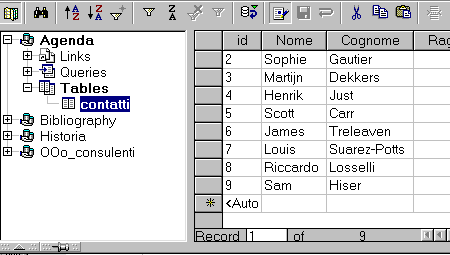
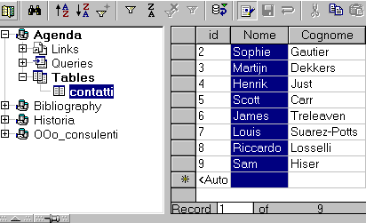
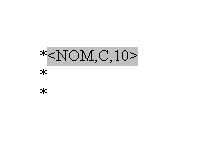
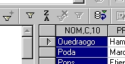
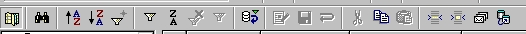
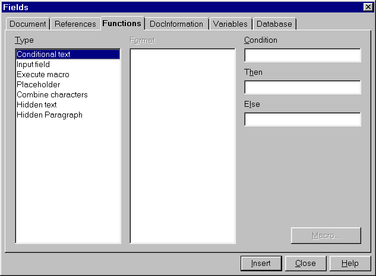

Cum sa realizezi Scrisori in Serie ('Mail Merge')
dintr-o foaie de calcul
OpenOffice.org Calc
Furnizat de
Proiectul de Documentare OpenOffice.org
Continut
- Crearea Bazei de Date Sursa
- Crearea Scrisorii Sablon
- Reunirea
- Trucuri pentru Paginarea Scrisorii
- Merite
1. Crearea Bazei de Date Sursa
Pentru a realiza Scrisori in Serie ('Mail Merge') in OpenOffice.org, va trebui sa transformati foaia dvs. de calcul intr-o baza de date sursa, si, astfel, veti fi capabil sa o afisati intr-un "Container".
Cand ati terminat de completat aceasta foie de calcul, dati click pe comanda File-Save (Fisier - Salveaza), aflata pe bara de meniuri, pentru a o salva in formatul .sxc, in directorul / dosarul pe care il doriti. Dupa aceasta, puteti inchide foia respectiva.
In meniul Tools (Unelte), aflat pe bara de meniuri, selectati Data sources... (Surse de date)

Va aparea o fereastra numita 'Data Source Administration' (Administrarea Sursei Datelor). In partea stanga veti vedea sursele de date deja create si inregistrate in 'Data Sources Manager' (Coordonatorul Surselor de Date). Tot ceea ce aveti de facut este sa navigati pana la pozitia in care ati salvat-o pe a dvs. si sa o selectati.
-
Dati click pe 'New Data Source' (Sursa noua de date);
-
In partea dreapta, in dreptul 'Name' (Nume), puteti scrie numele acesteia;
-
Sub 'Connection' (Conexiune), alegeti tipul de document pe care il veti utiliza ca Sursa de Date. Aici, in lista derulanta din dreptul 'Database type' (Tipul bazei de date), alegeti 'Spreadsheet' (Foaie de calcul tabelar);
-
In tabul Tables (Tabele) al 'Data Source Administration' (Administrarea Sursei Datelor), verificati daca numele foii de calcul a dvs. a fost selectat;
- Dupa aceasta dati apasati pe butonul 'OK' si foaia dvs. va fi utilizabila pentru 'Scrisori in Serie'.
Indicatie: Aceasta metoda poate fi folosita pentru a inregistra in cadrul Suitei OpenOffice.org orice tip admis de baze de date pe care il aveti deja prezent pe sistemul dvs.
2. Crearea Scrisorii Sablon
-
Deschideti un document text nou: File – New – Text (Fisier – Nou – Text);
-
Scrieti continutul scrisorii dvs. Nu aveti nevoie sa introduceti campurile de adresa la momentul prezent. Puteti sa scrieti un asterix (*), drept inlocuitor, pentru a va putea orienta cand crisoarea este terminata;
-
Cand ati terminat de completat scrisoarea, salvati-o, File – Save as... (Fisier – Salveaza ca fiind), dar nu inchideti documentul;
-
Din meniul 'View' (Vizualizare) aflat pe bara de meniuri, selectati 'Data Sources' (Sourse de Date). Puteti obtine acelasi rezultat apasand tasta F4 de la tastatura.

Sursele de date inregistrate de dvs. vor fi afisate in "Container". Tot ceea ce mai aveti de facut este
sa o selectati pe aceea cu care doriti sa lucrati:
-
Apasati pe cruciulita mica (+) plasata langa numele sursei de date a dvs., pentru a afisa componentele acesteia. Apoi, apasand pe numele unui tabel, veti vedea afisate campurile si inregistrarile in partea dreapta a "Containerului".
-
Ceea ce aveti de facut acum este sa adaugati campurile in cadrul documentului dvs.
-
Dati click si tineti apasat pe campul Name (Nume), sau oricum altfel l-ati denumit, din cadrul tabelului dvs.

-
Tinand apasat butonul mouse-ului, trageti peste semnul asterix (*) din cadrul ducumentului dvs. si apoi eliberati dati drumul. Campul va fi afisat in cadrul zonei din documentul dvs.:

-
Repetati aceasta actiune si pentru campul numit Surname (Prenume). Schimbati pozitia cursorului pentru a introduce celelalte campuri de adrese.
Dupa ce ati introdus toate campurile dvs., sunteti gata pentru reunire ('merge').
3. Reunirea
-

- Select the records you need:
- If you wish to select all records, click on the rectangle at the upper left corner of the table.
- Alternately, if you wish to select all the content of a field, you can click on the heading of the field.
- Finally, if you wish to select all fields of a record, click on the gray rectangle displayed to its right. A small arrow will be displayed and the record will be highlighted.
- To select records that are not consecutive, hold the CTRL key down while making your selections.
Acum sunteti pregatiti sa realizati reunirea dvs.
Pe bara de meniuri a "Containerului", penultimul buton are afisate cateva plicuri suprapuse. Apasati pe el pentru a avea acces la uneltele de sortare:

Va fi afisata urmatoarea fereastra:

-
Sortati inregistrarile, dupa cum le-ati selectat dvs., in procedura precedenta.
-
Apoi selectati spre care iesire ('Output') sa fie directionata tiparirea: 'Printer' (imprimanta), 'Electronic' (E-mail, FTP, retea) sau 'File' (Fisier).
Daca veti alege 'File' (Fisier), va trebui sa alegeti calea fisierului apasand pe butonul cu trei puncte (...) aflat in dreapta etichetei 'Path' (Cale). Veti avea posibilitatea sa navigati prin fisierele sistemului dvs., pana la acel fisier pe care doriti sa il utilizati.
Va fi creat un fisier pentru utilizarea cu inregistrarile selectate. Puteti denumi acest document in concordanta cu orice nume de camp al sursei dvs. de date.
In acest moment operatia de reunire ('merging') este terminata si reunirea completa!
4. Trucuri pentru Paginarea Scrisorii
Poate fi dificil pentru dvs., folosind aceasta metoda, ca macheta scrisorii sa fie afisata perfect. Sunt toate numele incluse corect in locul in care il doriti? Este spatiu irosit inutil in vre-un camp? Cum puteti evita aparitia liniilor goale in documentul dvs., cand unele adrese solicita un singur rand, iar altele doua? Acestea sunt decat cateva din intrebarile la care vom raspunde in continuare.
Cum puteti dvs. controla paginatia inainte sa le reuniti?
Puteti afisa inregistrarile in documentul dvs. inainte sa le reuniti.
Pentru a face asta, uitati-va la meniul "Containerului":
Al treilea buton din dreapta este numit 'Data to Fields' (Date in campuri).
Selectati o inregistrare si apasati acest buton. Campurile din cadrul machetei scrisorii dvs. vor fi completate cu datele inregistrarii selectate.
Puteti repeta aceasta actiune de cate ori va fi nevoie pentru a controla paginatia si pentru a ajusta macheta scrisorii dvs. Acesta este modul prin care toate adresele sunt afisate corect.
Nu trebuie sa mai selectati inregistrarile dupa ce ati facut verificarile dvs.
Cum sa eliminati liniile de adresa goale?
Haideti sa spunem ca in macheta dvs. campul 'ADDRESS_2' nu contine date in fiecare dintre inregistrari.
Pozitionati cursorul inaintea campului 'ADDRESS_2' din macheta scrisorii dvs. Apasati simultan combinatia de taste CTRL+F2 pentru a deschide fereastra de dialog a campurilor.
Apasati pe tabul Functions (Functii).

Selectati functia 'Hidden Paragraph' (Paragraf Ascuns) si introduceti conditia 'not(field name)'. Acesta va fi pentru exemplul nostru 'not(ADDRESS_2)'. Dupa aceea apasati pe butonul 'Insert' (Insereaza) pentru a insera functia in cadrul documentului dvs.
5. Multumiri
Autor: Sophie Gautier
Multumiri: lui Richard Holt, contribuitor important al OOo
Integrat de: Gianluca Turconi
Ultima modificare: 16 februarie, 2002
Contact organizational : OpenOffice.org Documentation Project http://whiteboard.openoffice.org/doc/index.html
Traducerea : Gianluca Turconi
Versiunea in limba romana:
Traducerea : Madalin Ion
Ultima modificare: 14 iulie, 2003
Contact organizational:: Subproiectul OpenOffice.org dedicat publicului vorbitor de limba romana http://ro.openoffice.org/